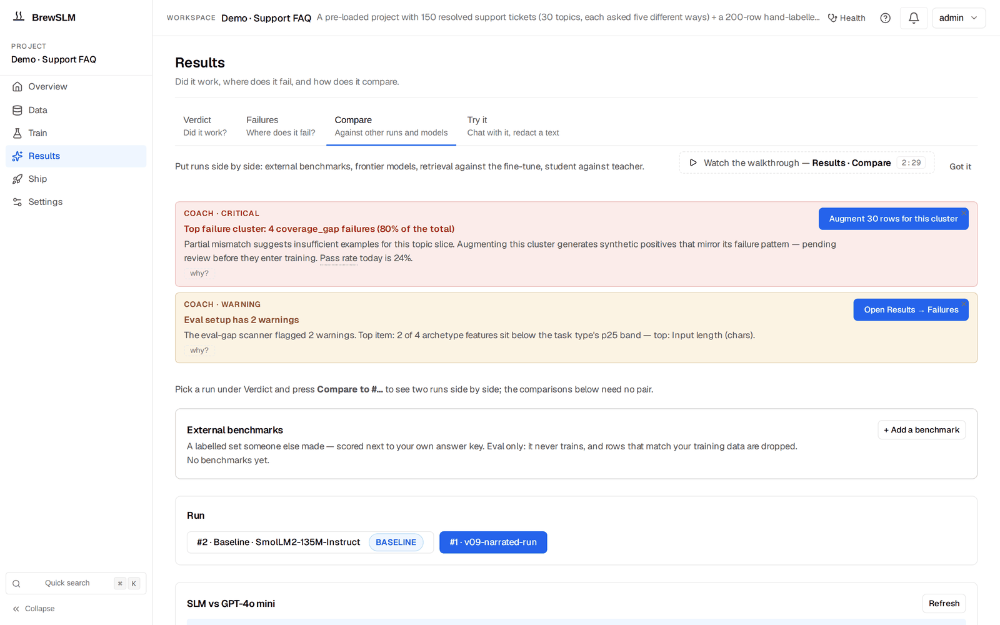

When fine-tuning isn't the answer: auto-RAG & reroute-to-RAG
After this lesson you can explain when the platform recommends retrieval over more fine-tuning, what auto-RAG adds at inference, and how reroute-to-RAG creates a base-model-plus-retrieval project — closing the loop Track 1 opened with 'fine-tuning vs RAG'.
Track 0 taught the choice between fine-tuning and retrieval; Track 2 lesson 2.7 ended with "if there's no lift, revisit the data." But sometimes the honest answer is that the task is knowledge-bound, not behavior-bound — no amount of fine-tuning teaches facts the model should be looking up. BrewSLM has surfaces for exactly that.
The post-eval decision engine
After evaluation, a decision engine reads the results and the failure clusters and recommends a next move. If the failures look like missing knowledge (the model is fluent but wrong on facts) rather than missing behavior, it can recommend retrieval instead of another training round — the platform telling you, with evidence, that you're holding the wrong tool. You meet the recommendation as a Coach notice at the top of Results and as the reroute panel on Results → Failures, which stays hidden until there is a failing eval to act on.
Auto-RAG — retrieval bolted onto your model
At training completion, the auto-RAG service builds a BM25 index over your corpus. Then the chat on Results → Try it prepends the top-K retrieved passages to the prompt before generation, so the model answers with relevant context in front of it. You can compare side by side — same model, with retrieval vs without — from the Auto-RAG comparison card on Results → Compare, which starts the same harness as a background Job (tracked in the bell) and shows the two arms as cards:
$ python -m scripts.auto_rag_ab --project 1
# builds/loads the BM25 index, runs the held-out split with and without
# top-K retrieval, and reports the metric delta from retrieval
From Track 1
BM25 is keyword retrieval — the lexical baseline from the foundations track. Auto-RAG uses it because it's fast, dependency-light, and strong for many tasks; the point is to test whether any retrieval helps before investing in heavier machinery.
Reroute-to-RAG — a retrieval-first sibling
If retrieval is clearly the right architecture, reroute-to-RAG goes further: it clones the project into a sibling with runtime_config.rag_first=True. That sibling's Results → Try it chat uses the base model plus retrieval — no LoRA adapter at all. You keep the original fine-tuning project intact for comparison, and the new project pursues the retrieval path cleanly. The clone runs as a background Job (the reroute_to_rag kind), so it's tracked in the bell like everything else.
The honest-metrics point
The decision engine recommending RAG is not a failure of your fine-tune — it's the platform refusing to let you grind epochs against a problem training can't solve. Knowing when not to fine-tune is as valuable as knowing how, and it's the through-line from Track 0's pretraining-vs-fine-tuning-vs-RAG lesson.
Whichever path clears the pass/fail rules — a fine-tuned adapter or a retrieval-first project — the last stage is getting it out into the world. Export, deploy, and the assistant that's been guiding the whole flow are the final lesson.
Key idea
When eval failures are knowledge-bound, the decision engine recommends retrieval. Auto-RAG prepends top-K BM25 passages to test the lift; reroute-to-RAG clones a base-model-plus-retrieval sibling with no LoRA. The platform helps you choose the right tool, not just turn the fine-tuning crank harder.
Key terms
- post-eval decision engine
- Reads eval results + clusters and recommends the next move — including retrieval over more training.
- auto-RAG
- Builds a BM25 index at training completion and prepends top-K retrieved passages at inference (Results → Try it; the comparison on Results → Compare).
- BM25
- Keyword (lexical) retrieval — fast and dependency-light; the retrieval baseline.
- reroute-to-RAG
- Clones the project into a retrieval-first sibling (rag_first=True) using base model + retrieval, no LoRA.
- knowledge-bound vs behavior-bound
- Whether failures are missing facts (use retrieval) or missing behavior (fine-tune).
Check yourself
Answers are saved to this browser.